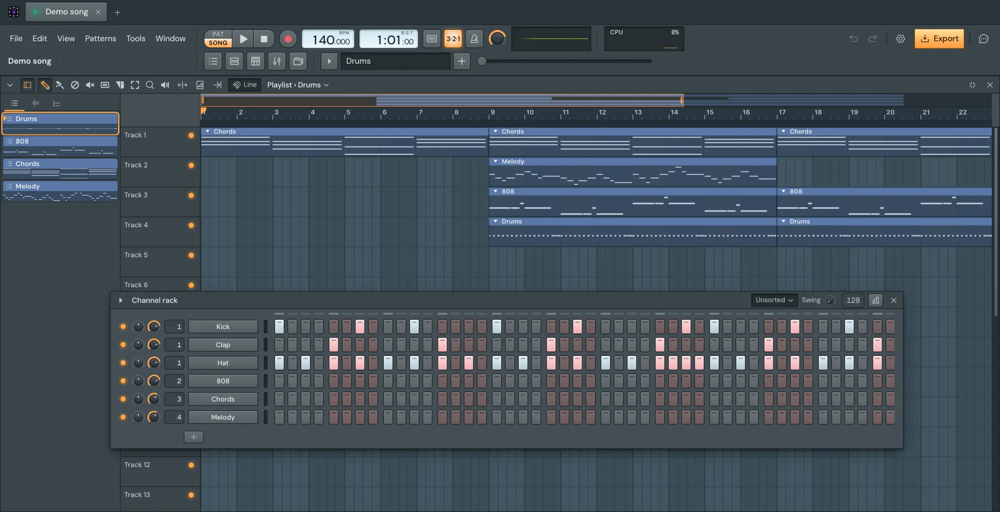
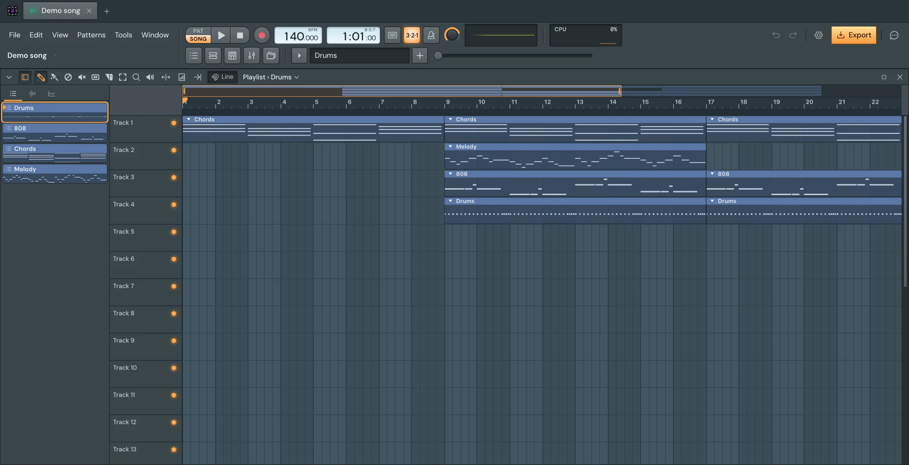
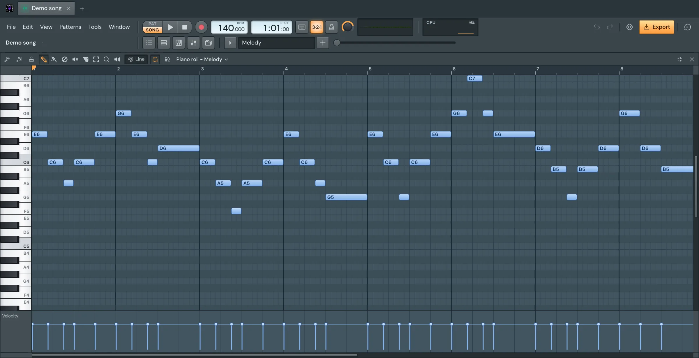
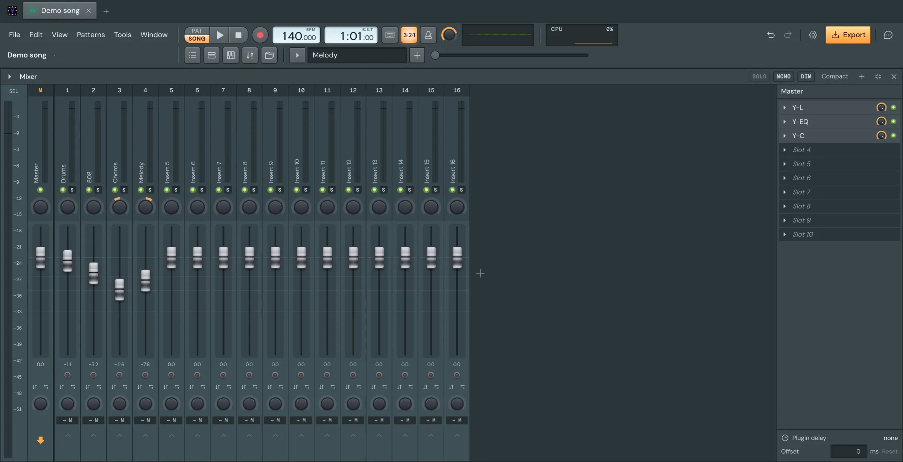
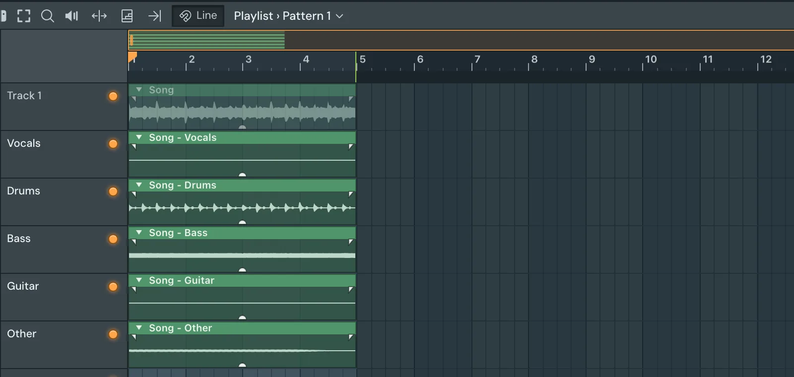
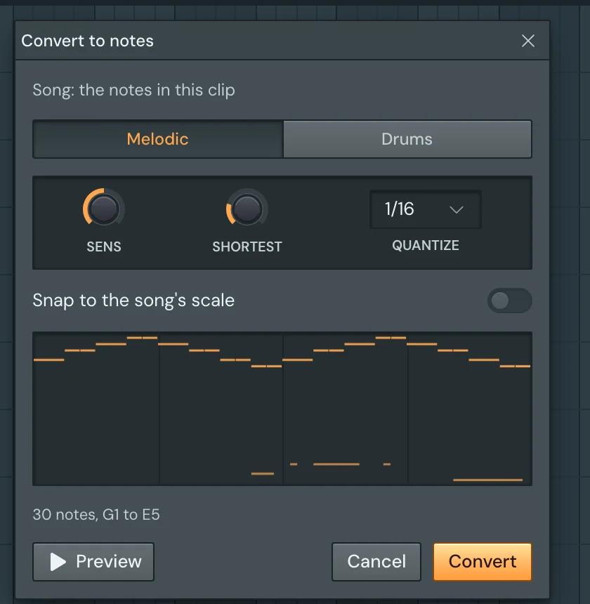
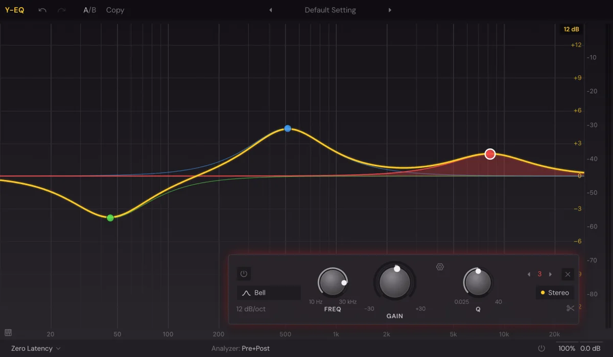
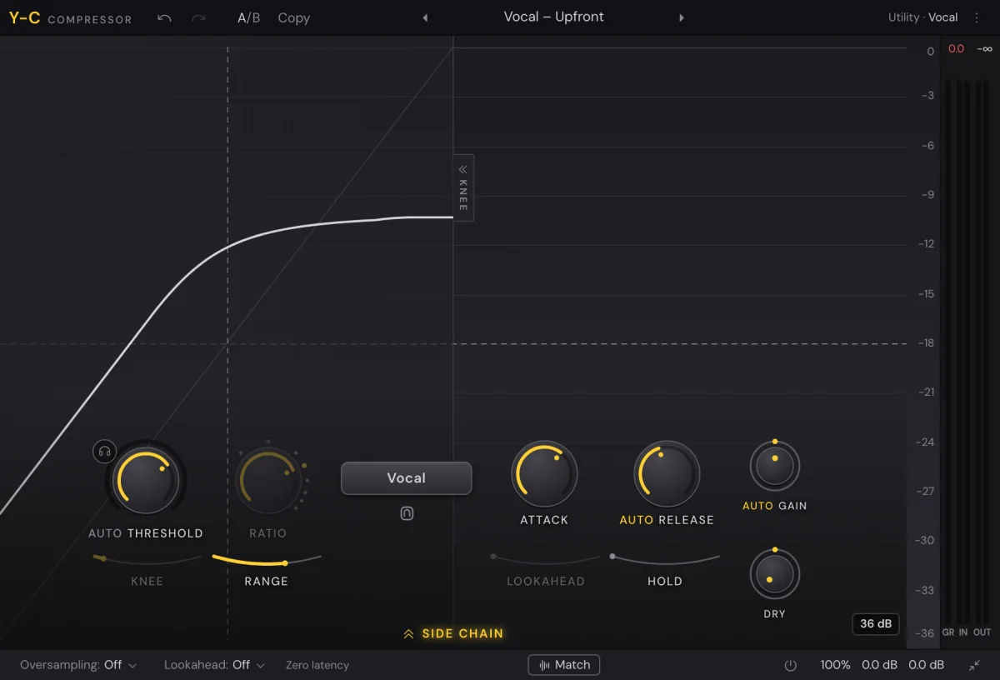
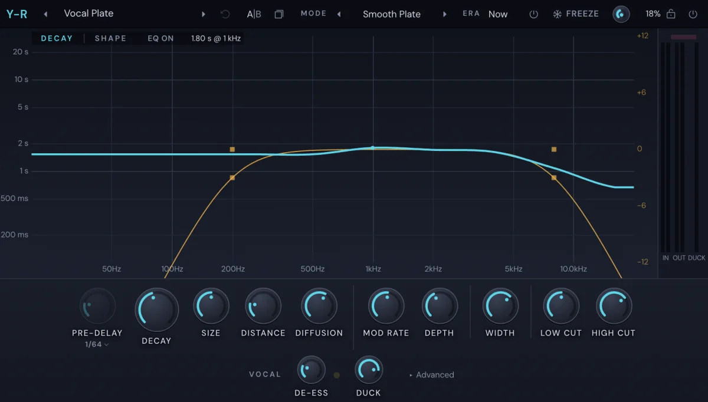
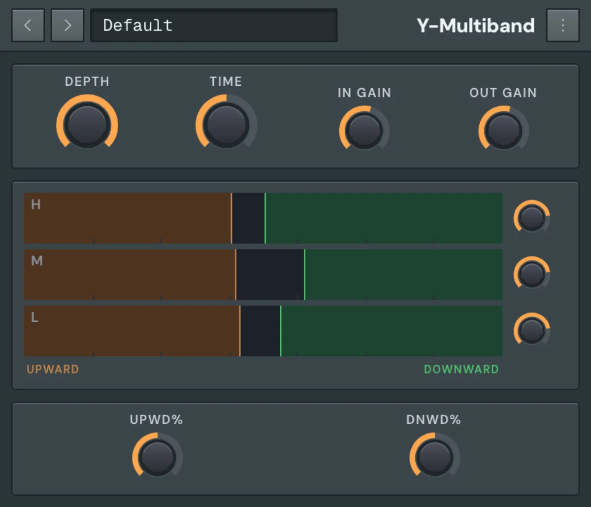

Early release · free for Apple Silicon Macs
The AI DAW that works with your plugins.
Patterns, a playlist, a piano roll and a mixer, every VST3 and AU you own, and an assistant that can read your whole song and edit it while you watch.

The assistant
Say what the song needs.
It reads the patterns, the notes, the mixer and your plugin list, then edits the open project, step by step, where you can see it. You keep what you like and undo the rest in one go.
An illustration, with the app's own names for each step. The assistant is your own Claude Code or Codex: you need one of them installed and signed in. The rest of the studio works without it.
The studio
A real one.
If you've worked with patterns and a playlist before, you already know your way around. Every part is a window you can move, dock or close.



Your plugins
Bring everything you own.
VST3 and Audio Units load as instruments and in mixer slots, in their own windows, with their own presets. Any knob can be automated.
The assistant sees the same list you do, so "put my pad synth on the chorus" means your pad synth.
Audio
Take a recording apart.
Both run on your Mac and nothing gets uploaded. Their models download the first time you ask for them.


Built in
Effects that come with it.
A full chain before you've installed anything. The assistant can set every one of them, band by band.




- Y-L limiter
- Y-Delay echo
- Y-Time time and volume gates
- Y-Tune pitch correction
- Y-Pan moving pan
- Y-Pitch pitch
Your files
A song is a file, and it's yours.
A .yen file holds the song and its samples, on your disk, so you can move it, back it up and open it years from now.
WAV, AIFF, FLAC, MP3, OGG and M4A. Your sample folders. A MIDI keyboard and your audio inputs.
Song.yenWAV, MP3 and FLAC. MIDI. A stem per mixer track, ready to send to someone.
Get Yen Studio.
Free, with no account.
Download for MacVersion 0.1.0 · 100 MB · Apple Silicon (M1 or later) · macOS 14 or later
Windows and Intel Macs aren't ready yet.
How to open it
Yen Studio isn't signed with an Apple certificate yet, so the first launch takes an extra step.
- Open the download and drag Yen Studio to Applications.
- Open it. macOS says it can't verify the app: choose Done.
- In System Settings › Privacy & Security, scroll down and choose Open Anyway.
After that it opens like anything else.
The assistant
It runs on your own Claude Code or Codex: install one, sign in, and choose it in the chat. What you ask goes to that service under your account, and nowhere else.
Everything else in the studio works without either.
It's early
This is a first release and there will be rough edges. Help › Report a Problem in the app opens a report you can read before you send it. There's no automatic crash reporting.
Home tells you when a newer version is out. What the app sends.